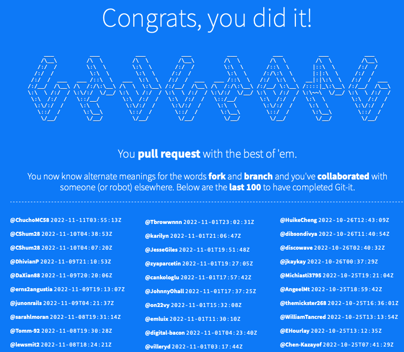

This was a challenge set by Manchester Codes to search a detailed set of directories and text files to find clues and identify
GitHub and Git-It

The final stage of the Git-It introduction challenge!
Git-It was an application we worked through to understand the basics of GitHub and the most used commands. Following this we completed a 'student roster' challenge where we had to introduce ourselves on the Manchester Code repository